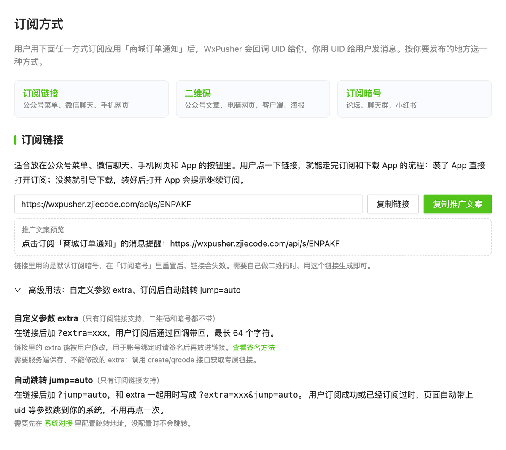
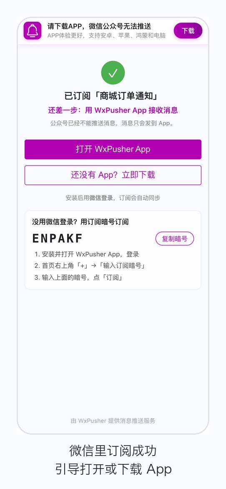
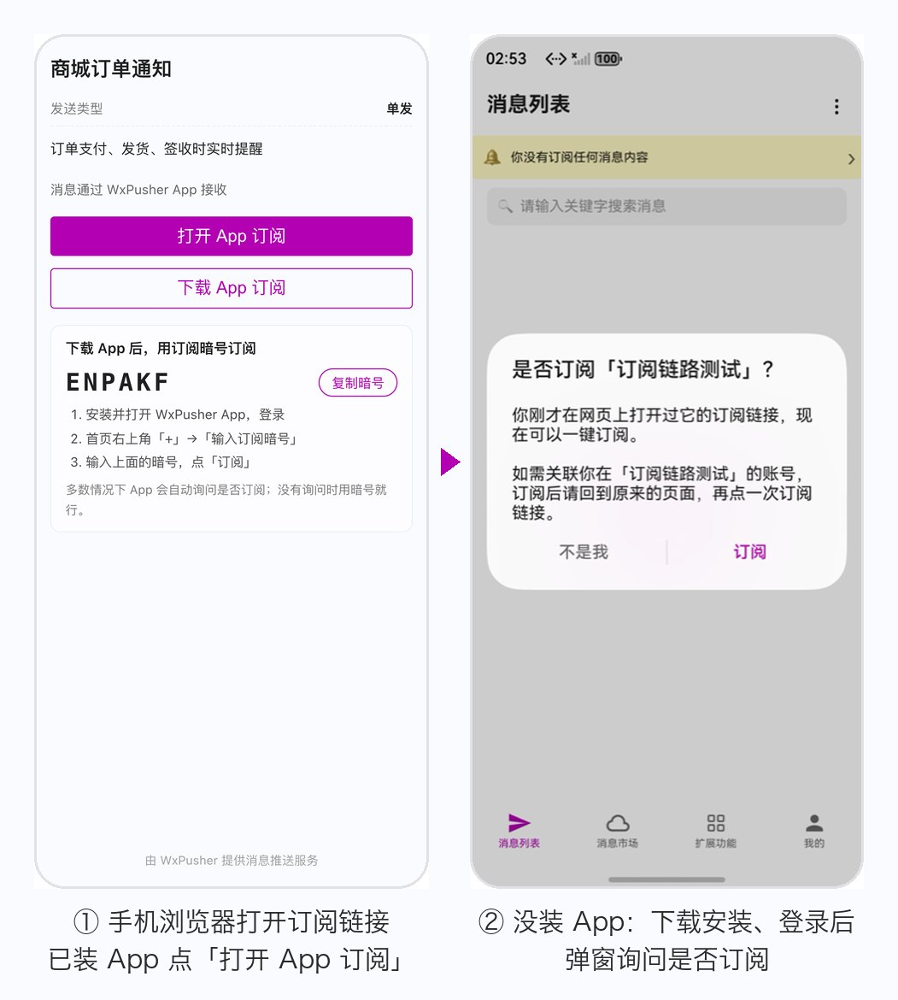
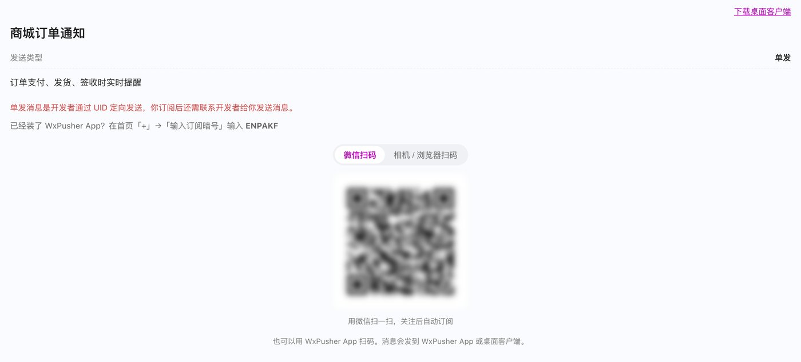
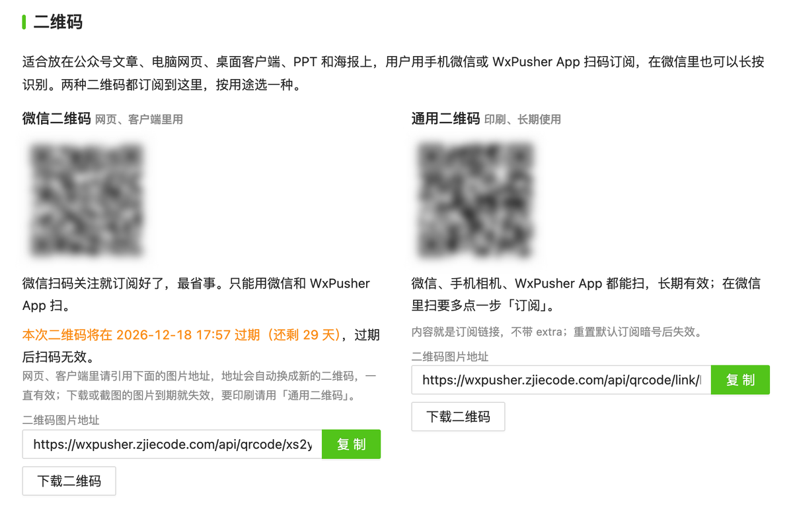
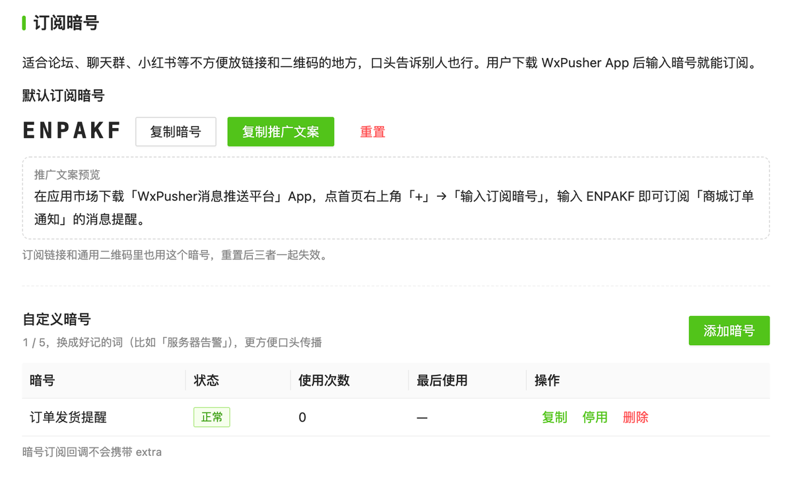
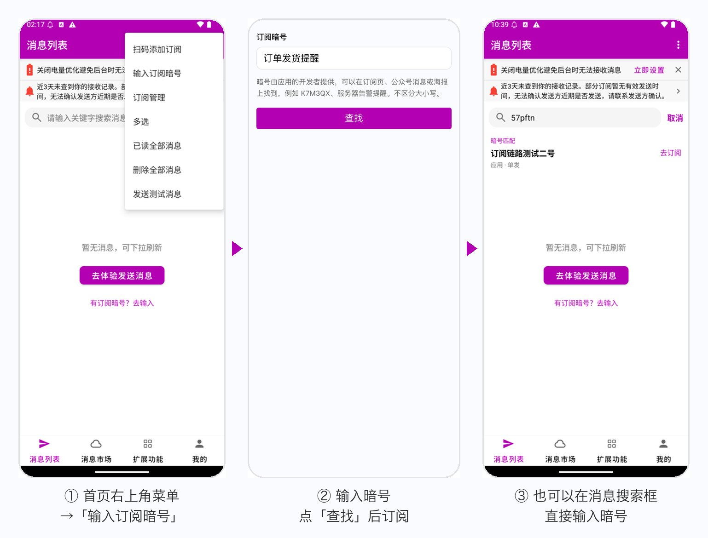

WxPusher 订阅方式：订阅链接、二维码、订阅暗号怎么选
用户订阅了你的应用或主题，你才能给他发消息。以前，用户基本只能在微信里扫码、关注公众号来订阅。现在公众号已经不能推送消息，用户最终要在 WxPusher App（或桌面客户端）里收消息，所以 WxPusher 把订阅流程整体升级了。
- 一个订阅链接走遍所有环境：微信、手机浏览器、WxPusher App、电脑都能打开，用户不需要先装 App；
- 两种二维码：微信二维码在微信里最省事，通用二维码手机相机也能扫，适合印刷；
- 订阅暗号：一串好记的字，适合论坛、聊天群、小红书这类不方便放链接的地方，口头告诉别人也行；
- 订阅后自动引导下载 App，没装 App 的用户装好后，App 会询问是否继续订阅，订阅意图尽量不丢。
本文按「你要发布在哪里」介绍每种方式，以及用户在每种场景下实际看到的流程。
三种订阅方式，按发布的地方选
| 订阅方式 | 适合发布在 | 用户要做什么 | 能带 extra | 回调 source |
|---|---|---|---|---|
| 订阅链接 | 公众号菜单、微信聊天、手机网页、你自己 App 里的按钮 | 点一下链接 | 能 | link |
| 二维码 | 公众号文章、电脑网页、桌面客户端、PPT、海报 | 用微信或手机扫码 | 默认不带；需要时用带 extra 的链接自己生成 | scan |
| 订阅暗号 | 论坛、聊天群、小红书、口头传播 | 在 App 里输入暗号 | 不能 | code |
三种方式都订阅到同一个应用或主题，可以同时使用。不知道选哪个时，优先用订阅链接：它在各种环境下都能走通。
在哪里获取
登录 WxPusher 管理后台：应用在左侧菜单「应用管理 → 关注订阅」；主题在「主题管理」列表里点主题的「关注订阅」。应用和主题的订阅方式、用户看到的流程都一样，只是查看的入口不同；另外主题订阅没有回调，也不支持 extra。
页面顶部按投放场景分成「订阅链接」「二维码」「订阅暗号」三段，点击可以直接跳到对应的分段。订阅链接和订阅暗号都提供「复制推广文案」，复制后可以直接发到群里或贴到页面上。

方式一：订阅链接
链接形如 https://wxpusher.zjiecode.com/api/s/K7M3QX，最后一段是这个应用或主题的默认订阅暗号。推广文案是：
点击订阅「商城订单通知」的消息提醒：https://wxpusher.zjiecode.com/api/s/K7M3QX同一个链接，在不同环境里打开，用户看到的流程不一样，但都能走到「订阅成功 + 用 App 收消息」：
| 用户在哪里打开 | 用户看到的流程 |
|---|---|
| WxPusher App 里 | 进入订阅页，点「订阅」即可；没登录会先登录，登录后回到订阅页 |
| 微信里，已关注公众号 | 落地页点「订阅」→ 订阅成功页 |
| 微信里，未关注公众号 | 落地页显示公众号二维码 → 长按识别、关注即订阅 → 订阅成功页 |
| 手机浏览器，已装 App | 系统直接拉起 App 进入订阅页；已经停在浏览器里时，点「打开 App 订阅」 |
| 手机浏览器，没装 App | 落地页点「下载 App 订阅」→ 安装、登录 → App 弹窗询问是否订阅 |
| 电脑浏览器 | 显示二维码和订阅暗号，用手机扫码或在 App 里输入暗号 |
微信里：订阅成功后引导装 App
用户在微信里订阅成功后，会看到下面的页面。公众号已经不能推送消息，所以页面会明确告诉用户「还差一步」：
- 打开 WxPusher App：已安装时直接拉起 App（部分环境不支持直接拉起时，会转到下载页）；
- 还没有 App？立即下载：跳转到下载页；
- 安装后用微信登录，在微信里完成的订阅会自动同步；没用微信登录的，用页面下方的订阅暗号再订阅一次即可。
扫码关注后，公众号也会回复一条消息和一张「下载 WxPusher App 接收消息」的卡片，点开同样是这个页面。

手机浏览器：已装直接打开，没装引导下载
在手机浏览器、QQ 等非微信环境打开链接时：
- 已安装 App：系统会直接拉起 App 进入订阅页；如果页面已经在浏览器里打开，点「打开 App 订阅」即可；
- 没有安装：点「下载 App 订阅」去下载。下载安装、同意隐私政策并登录后，App 会弹窗询问「是否订阅「XXX」？」，点「订阅」就完成了。万一没有弹窗，用页面上显示的订阅暗号在 App 里输入即可。

电脑上打开
电脑上打开链接时，页面显示二维码和订阅暗号，用户拿出手机扫码，或在 App 里输入暗号。二维码可以在「微信扫码」和「相机 / 浏览器扫码」之间切换。右上角提供桌面客户端下载入口。

链接的高级用法
只有订阅链接支持下面两个参数（应用支持，主题不支持 extra）：
extra自定义参数：https://wxpusher.zjiecode.com/api/s/K7M3QX?extra=xxx，最长 64 个字符，用户订阅后通过用户关注回调原样带回。用途、两种写法和加签验证见下一节。jump=auto自动跳转：?jump=auto，和 extra 一起用时写成?extra=xxx&jump=auto。用户订阅成功或已经订阅过时，页面自动带上 uid 等参数跳到你的系统，需要先在「应用管理 → 系统对接」配置跳转地址，详见系统对接。
extra 能做什么，怎么防伪造
extra 是你放在订阅链接上的一段自定义字符串（仅应用支持），用户订阅后会通过用户关注回调原样带回，让你知道「这个 UID 从哪来、对应你系统里的谁」。常见用法：
| 用途 | extra 放什么 | 收到回调后做什么 |
|---|---|---|
| 账号绑定 | 你系统里的用户标识，例如 10086 | 把回调里的 UID 存到这个用户名下，以后按用户发消息 |
| 业务对象订阅 | 订单号、服务器 ID、监控项 ID 等 | 把 UID 和这个对象关联，对象有变化时只通知订阅了它的人 |
| 渠道统计 | 渠道代号，例如 ch_xhs、ch_poster | 按 extra 统计各渠道带来了多少订阅 |
| 邀请奖励 | 邀请人编号 | 给邀请人记一次有效邀请 |
有两种方式生成带 extra 的链接，用户看到的流程一样：
| 方式 | 写法 | 链接里的 extra 能否被用户修改 |
|---|---|---|
| A. 链接直接拼 | https://wxpusher.zjiecode.com/api/s/{默认订阅暗号}?extra=xxx，不用调接口 | 能 |
| B. 接口创建 | 调用创建参数二维码，返回值里的 link 就是带 extra 的订阅链接，extra 存在服务端 | 不能 |
- extra 最长 64 个字符；方式 B 的链接上再拼 extra 不生效；方式 B 的链接和二维码有效期相同，过期后需要重新创建。
- 用户没装 App 时，只有安装后高置信还原才带回 extra（见下文「没装 App 的用户，装好后怎么接上」）。安全要求高的业务，可以在给这个 UID 发敏感消息前，让用户在你的系统里再确认一次绑定。
用于账号绑定、邀请奖励时，请加签验证
WxPusher 只负责把 extra 原样带回，不判断它是否可信。方式 A 的 extra 写在链接上，任何人都能改：如果 extra 是明文的 10086，别人把它改成 10087 再订阅，你就会把他的 UID 绑到 10087 这个用户上，之后 10087 的消息都会发给他。所以 extra 只用于渠道统计时可以明文；用于账号绑定、邀请奖励等会产生权益的场景，请在你的服务端加签，收到回调时验签。
推荐格式：extra = {用户标识}.{过期时间}.{签名}，例如 10086.1795099042.VTsPiB2mvkUTZr2P。
- 生成链接（在用户登录你的系统、点「开启消息通知」时生成，不要提前写死在页面里）：
过期时间用秒级时间戳，建议 1 天以内；签名= 用只有你服务端知道的密钥，对{用户标识}.{过期时间}做 HMAC-SHA256，结果用 base64url 编码后取前 16 个字符；- 用户标识只用字母、数字、
-、_，最长 36 个字符，这样整个 extra 不超过 64 个字符，也可以直接拼在链接上，不用转义。
- 收到回调：按
.拆成三段，用同一个密钥重新计算签名，和第三段一致、并且过期时间没到，才把 UID 绑定到这个用户。比较签名时用常量时间比较，避免时序攻击。 - 不想自己签名：用方式 B，extra 存在服务端，用户改不了；为了两种方式统一处理，也可以同样签名。
签名能防止别人伪造或篡改 extra，但防不住用户把自己的链接转给别人：别人用这个链接订阅，同样会绑定到原用户名下。所以链接要现生成、设置较短的过期时间，并且只展示给已经登录的本人。
各语言示例（secret 是你自己生成的随机密钥，只放在服务端，和 WxPusher 后台的任何密钥都无关）：
// Node.js
const crypto = require('crypto');
const sign = (s) => crypto.createHmac('sha256', secret).update(s).digest('base64url').slice(0, 16);
// 生成链接
const exp = Math.floor(Date.now() / 1000) + 24 * 3600;
const extra = `${userId}.${exp}.${sign(`${userId}.${exp}`)}`;
const link = `https://wxpusher.zjiecode.com/api/s/K7M3QX?extra=${extra}`;
// 收到回调，验签通过返回用户标识，否则返回 null
function verifyExtra(extra) {
const [id, exp, sig] = (extra || '').split('.');
if (!id || !exp || !sig || Number(exp) < Date.now() / 1000) return null;
const expect = Buffer.from(sign(`${id}.${exp}`));
const actual = Buffer.from(sig);
return expect.length === actual.length && crypto.timingSafeEqual(expect, actual) ? id : null;
}# Python
import base64, hashlib, hmac, time
def sign(s):
mac = hmac.new(secret.encode(), s.encode(), hashlib.sha256).digest()
return base64.urlsafe_b64encode(mac).decode().rstrip('=')[:16]
# 生成链接
exp = int(time.time()) + 24 * 3600
extra = f'{user_id}.{exp}.{sign(f"{user_id}.{exp}")}'
# 收到回调，验签通过返回用户标识，否则返回 None
def verify_extra(extra):
parts = (extra or '').split('.')
if len(parts) != 3 or not parts[1].isdigit() or int(parts[1]) < time.time():
return None
uid, exp, sig = parts
return uid if hmac.compare_digest(sign(f'{uid}.{exp}'), sig) else None// Java
static String sign(String s, String secret) throws Exception {
Mac mac = Mac.getInstance("HmacSHA256");
mac.init(new SecretKeySpec(secret.getBytes(StandardCharsets.UTF_8), "HmacSHA256"));
byte[] raw = mac.doFinal(s.getBytes(StandardCharsets.UTF_8));
return Base64.getUrlEncoder().withoutPadding().encodeToString(raw).substring(0, 16);
}
// 生成链接
long exp = System.currentTimeMillis() / 1000 + 24 * 3600;
String extra = userId + "." + exp + "." + sign(userId + "." + exp, secret);
// 收到回调，验签通过返回用户标识，否则返回 null
static String verifyExtra(String extra, String secret) throws Exception {
String[] p = extra == null ? new String[0] : extra.split("\\.");
if (p.length != 3 || !p[1].matches("\\d+") || Long.parseLong(p[1]) < System.currentTimeMillis() / 1000) {
return null;
}
byte[] expect = sign(p[0] + "." + p[1], secret).getBytes(StandardCharsets.UTF_8);
return MessageDigest.isEqual(expect, p[2].getBytes(StandardCharsets.UTF_8)) ? p[0] : null;
}方式二：二维码
后台提供两种二维码，都订阅到同一个应用或主题，并排展示，按用途选一种：
| 对比项 | 微信二维码 | 通用二维码 |
|---|---|---|
| 适合放在哪 | 网页、App、客户端里，引用图片地址 | 印刷海报、PPT、群公告图片等长期使用的地方 |
| 能用什么扫 | 微信、WxPusher App | 微信、手机相机、浏览器、WxPusher App 等任意扫码工具 |
| 微信扫，没关注公众号 | 弹出关注页，点「关注」就订阅好了 | 先打开落地页，再长按识别、关注，多 2 步 |
| 手机相机扫 | 识别不了 | 已装 App 直接拉起订阅；没装引导下载 |
| WxPusher App 扫 | 直接订阅，一步完成 | 直接订阅，一步完成 |
| 会不会过期 | 下载或截图的图片最长 30 天过期；引用图片地址时地址会自动换成新的二维码，一直有效 | 长期有效，只有重置默认订阅暗号后才失效 |

一句话：用户主要在微信里扫、页面能引用图片地址，用微信二维码；要印刷、长期使用，或者用户可能用手机相机扫，用通用二维码。
两种二维码都不带 extra。需要 extra 时，用带 extra 的订阅链接自己生成二维码即可，任何扫码工具都能识别。
用户扫码后看到的流程：
- 微信扫微信二维码：没关注的弹出关注页，关注即订阅；已关注的直接订阅。随后公众号回复一条消息，引导下载 App（同上文「微信里：订阅成功后引导装 App」）。
- 扫通用二维码：相当于打开订阅链接，流程见「方式一」。
- WxPusher App 扫任意一种：直接订阅，弹出「订阅成功」。老版本 App 扫通用二维码同样可以一步订阅。
方式三：订阅暗号
订阅暗号是给人看、给人输入的。每个应用和主题都有：
- 默认订阅暗号：创建时自动生成，6 位大写字母和数字（不含容易混淆的 0、1、I、L、O），例如
K7M3QX。订阅链接和通用二维码里用的也是它，在后台重置后，旧暗号、旧链接、旧通用二维码一起失效。 - 自定义暗号：你可以给应用或主题起几个好记的词，例如「订单发货提醒」。每个最多 5 个，2–16 个字符，只能是中文、字母、数字；全局唯一、先到先得，不区分大小写；不能包含 WxPusher、官方、客服等平台保留词，也不能只用「订阅」「测试」这类通用词；不能是 6 位纯字母数字（留给默认订阅暗号）。删除后不会释放给别人，防止已经印出去的海报被抢注。

推广文案是：
在应用市场下载「WxPusher消息推送平台」App，点首页右上角「+」→「输入订阅暗号」，输入 K7M3QX 即可订阅「商城订单通知」的消息提醒。用户在 App 里有三个地方可以输入暗号：首页右上角菜单里的「输入订阅暗号」、消息列表为空时的「有订阅暗号？去输入」、以及消息搜索框和消息市场搜索框（直接输入暗号就能搜到）。找到后进入订阅页，点「订阅」完成。

暗号订阅只指向应用或主题本身，回调不带 extra。为防止被枚举，「输入订阅暗号」页每台设备每小时最多查询 10 次，连续输错 5 次后需要等一段时间再试。
没装 App 的用户，装好后怎么接上
用户在手机浏览器打开订阅链接、但还没装 App 时，落地页会记录这次订阅意图。用户安装、同意隐私政策并登录后，App 会尝试找回这个意图：
| 匹配结果 | 用户看到 | 回调 |
|---|---|---|
| 高置信 | 弹窗「是否订阅「XXX」？」，点「订阅」后完成 | 带 extra，extraFrom 为 install_restore，source 为 install_restore |
| 中置信 | 同样弹窗确认；意图带 extra 时，弹窗会提示用户回到原页面再点一次链接 | 不带 extra，source 为 install_restore |
| 没匹配到 | 不弹窗，用户用落地页上的订阅暗号订阅 | 按暗号订阅回调，source 为 code |
弹窗都需要用户确认，可以点「不是我」拒绝。高置信还原的准确率很高但不是 100%，安全要求高的业务，可以在给这个 UID 发敏感消息前，让用户在你的系统里再确认一次绑定。
回调怎么区分来源
用户通过应用订阅后，WxPusher 会调用你配置的回调地址（主题订阅没有回调），格式见用户关注回调。和订阅方式相关的字段：
| 字段 | 取值 |
|---|---|
source | scan 扫码关注，link 链接订阅，code 输入订阅暗号，install_restore 下载 App 后还原订阅，command 通过消息订阅；以后可能新增，请做好兼容 |
extra | 链接或参数二维码带的自定义参数；没有时为空 |
extraFrom | api 接口创建（用户改不了），link 链接上直接拼（可能被修改），install_restore 下载 App 后高置信还原；没有 extra 时为空 |
升级前的订阅方式还能用吗
能，升级是兼容的，已经发出去的链接和二维码不需要重新生成：
- 老订阅链接（
/app/?type=1&id=xxx#/follow、/wxuser/#/follow这类）：在 WxPusher App 里打开和以前一样；在 App 外打开会自动跳转到新的订阅链接，jump=auto继续有效。 - 已经分发的微信二维码，包括创建参数二维码接口生成的带 extra 的二维码：在有效期内继续可用，扫码关注即订阅，回调和以前一样。
- 创建参数二维码接口：返回值新增
link字段，就是带这个 extra 的订阅链接，原有字段不变。 - 回调：只新增了
extraFrom字段和source的新取值，原有字段含义不变。请确保回调处理代码能接受未知的source取值。 - 老版本 App：扫通用二维码也能一步订阅；新的订阅暗号入口、安装后还原需要升级到新版本 App。
常见问题
用户没装 App 能订阅吗？
能。在微信里可以先关注公众号完成订阅，再下载 App 用微信登录，订阅会自动同步；在其他环境里，落地页会引导下载，装好后 App 会询问是否继续订阅，也可以用订阅暗号订阅。不过要收到消息，最终需要安装 WxPusher App 或桌面客户端。
微信公众号还能收到消息吗？
不能。公众号已经不能推送消息，消息只会发到 WxPusher App、桌面客户端，以及用户在 App 里绑定的微信 ClawBot 渠道。
订阅链接、二维码、暗号可以同时用吗？
可以。它们都指向同一个应用或主题，你可以在不同的地方放不同的方式。
我重置了默认订阅暗号会怎样？
旧暗号、用它组成的订阅链接和通用二维码都会立即失效，已经订阅的用户不受影响。已经印出去的物料请谨慎重置。
主题能带 extra 吗？
不能。主题订阅没有回调，extra 只对应用生效。
extra 会被用户伪造吗？
链接上直接拼的 extra 能被改。用于账号绑定、邀请奖励时，请用 HMAC 加签并在回调里验签，或者改用创建参数二维码接口返回的 link，见上面的「extra 能做什么，怎么防伪造」。
用户订阅后，我怎么拿到 UID？
在应用里配置回调地址，用户订阅后 WxPusher 会把 UID 推送给你；没有服务端时也可以轮询查询扫码用户UID接口，或在后台「用户管理」里查看。